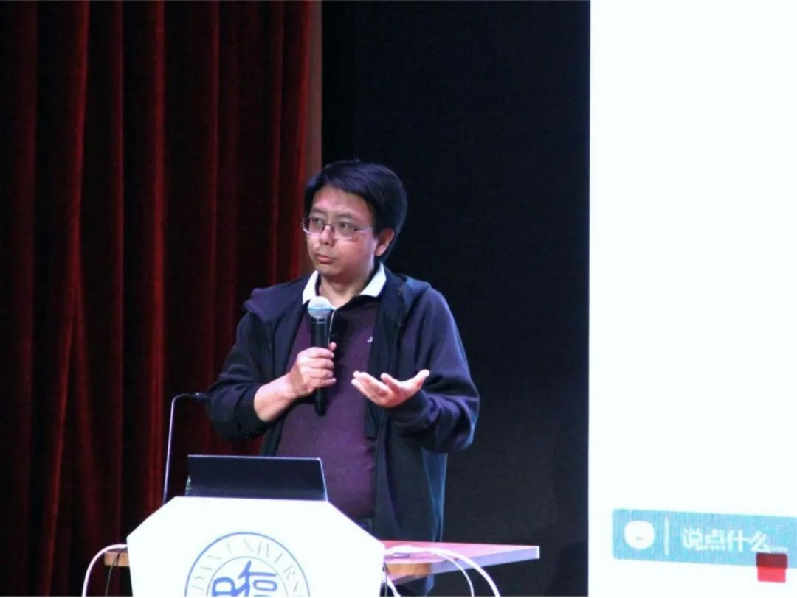
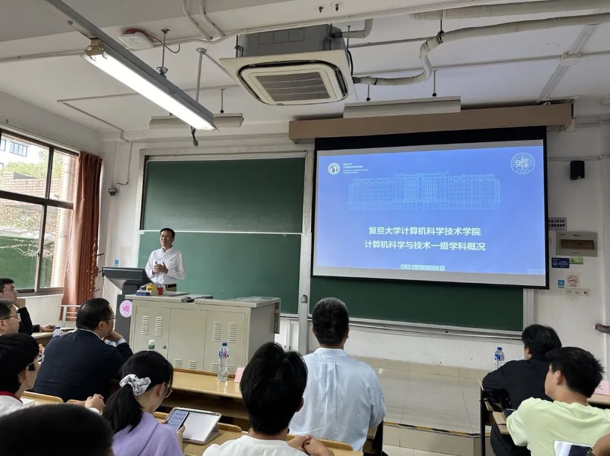

10月19日起，计算机科学技术学院举办以“智赋能·赢未来”为主题的学科周，开展了包括步青讲坛、学术前沿报告会、实验室开放日、科普实践等一系列活动，精彩纷呈，让我们一起来看看第一辑回顾。
学科周开幕式
10月19日下午，计算机科学与技术学科周开幕式在江湾校区二号交叉学科楼A1010举行，中国科学院院士陆汝钤和学院师生代表出席开幕式。陆汝钤院士宣布计算机科学与技术学科周正式开幕。王新书记介绍学科周相关情况，表示希望通过学科周丰富的学术活动安排，师生能够充分交流、融合创新，共同促进计算机学科的发展。院长助理卢暾详细介绍了学科周各项安排， 10月19日-30日期间将举办步青讲坛、学术前沿报告会、实验室开放日、“1024”文艺晚会、校友行业分享会、科普实践等系列活动，期待师生积极参与，碰撞思想火花。
步青讲坛(第一期)
为了拓宽广大师生的学术视野、促进学术进步，计算机科学技术学院设立了“步青讲坛”和“步青论坛”两个高水平的学术品牌项目。以“步青”命名是为了纪念苏步青先生在计算数学等方面的开创工作、为复旦大学计算机学科建立奠定的坚实基础。“步青讲坛”和“步青论坛”将邀请国内外著名专家开展战略讲座、学术分享、前沿探讨等方面的活动，推动计算机学院的学科大发展。
10月26日下午，“步青讲坛”第一期邀请到中国工程院院士于全，为全院师生作题为“面向天空地一体化的云原生网络架构”的学术报告，并聘请于全院士担任步青讲坛主席。学院书记王新、院长杨珉、师生代表200余人参加，本次讲坛由计算机学院学术委员会主任吴俊主持。
于全院士首先提到苏步青老先生对他那一辈人的精神激励，鼓励年轻人勇于探索。当今互联网行业发展迅速，传统的网络架构已很难适应各种复杂需求。于院士率领团队花费了十年时间，不断探索新型网络架构，开创性地提出了万物互联、网络异构、业务云化的一体化云原生网络架构，解决现有互联网传输效率低、服务质量无保证等问题。于院士为大家详细介绍了云原生网络因云而生、为云而存、依云而建的扁平化架构思想。采用云原生网络，还可有效容纳多个运营商、多种异构接入网络和多种异质传输手段等；进一步提出网络孪生的新构想，用于应对跨运营商和跨网络的资源调度等方面的挑战。于院士还创新地结合免疫学等跨学科知识来开展云原生网络，取得了丰富的研究成果。
在问答环节中，许多同学对新型云原生网络架构进行了详细的提问，于全院士分别进行了解答，同学们纷纷表示收获良多。最后，于院士还勉励大家多开展合作研究。“步青讲坛”第一期取得了圆满的成功。
学术报告
大模型时代的人机协同
10月22日下午，“大模型时代的人机协同”学术前沿报告会在江湾校区二号交叉学科楼 E1006 报告厅举行。报告会由复旦大学卢暾教授主持，同济大学曹楠教授、中南大学吕鹏教授、清华大学喻纯教授、复旦大学尚笠教授作报告。
曹楠作题为“人-机协同下的信息传达设计与数字传媒”的学术报告，从信息传达设计简介、数据叙事与信息传达、面向数据叙事的AIGC三个方面进行介绍，提出要做“有内涵、好理解、易传达”的数据可视化，大模型为这一storytelling的过程赋能，推动了更具时效性的数据叙事。
吕鹏作题为“社会模拟与社会治理”的学术报告，从个体、群体、社会三个角度对人类群体行为计算机建模各阶段研究进行了细致而详尽的报告，结合高层火灾模拟等多项具体研究和相应的社会事件实例，提供了来自社会科学领域的深入思考和最新见解。
喻纯作题为“人机物融合中的交互式学习”的学术报告从人机共生引导交互计算、人机交互和人工智能的关系引入主题，对触摸意图识别、语音免唤醒等前沿技术作介绍，详尽阐述了人机物融合中的“交互式学习”。在报告中，喻纯寄予了青年“做大模型应用的先驱”的厚望。
尚笠作题为“Wearable AGI: Personal Companionship towards Digital Immortality”的学术报告，从科幻电影《Her》出发，介绍了在attention、emotion、cognition、intention、learning五个方面不断进展的个人可穿戴设备MemX，并就ChatGPT与电影中的人工智能Samantha的差距提出深刻的见解，最后以“Digital Immortality”概念为报告划上句点，引人深思无限。
大模型与通用人工智能
10月23日下午，“大模型与通用人工智能”青年学者学术报告会在江湾校区交叉学科二号楼E1021举行。本次报告会邀请了多位在大模型研究领域有着深厚造诣的青年学者，他们从各自的研究领域出发，分享了最新的研究成果和见解。
上海人工智能实验室青年科学家颜航带来了题为“大模型中的相对位置编码”的报告，他深入解析了大模型中的相对位置编码，并分享了他们对RoPE位置编码base的最新研究成果。相对位置编码在大模型中起着至关重要的作用，他们的研究成果将有助于提升大模型的性能。
复旦大学自然语言处理实验室青年副研究员桂韬带来了题为“基于大语言模型的智能体：起源、现状与未来”的报告，他从历史和现状出发，探讨了大模型在构建智能体方面的可能性和挑战。报告中指出，大模型的发展为构建智能体提供了新的可能，但同时也面临着许多挑战，如模型的可解释性、安全性等问题，如何解决这些问题是接下来的研究方向之一。
复旦大学研究员马兴军带来了题为“大模型可信性研究”的报告，他深入探讨了大模型在可信性和安全性方面的问题，并分享了他们团队在这方面的最新研究成果。报告中强调，大模型的可信性是其广泛应用的基础，他们的研究将有助于提升大模型的可信性。
复旦大学研究员叶广楠带来了题为“大模型时代下金融业的发展机遇和挑战”的报告，他结合具体实例，深入探讨了大模型在金融科技领域的应用和挑战。报告中指出，大模型在金融科技领域有着广阔的应用前景，但同时也面临着数据安全、隐私保护等挑战。
知识融合的智能计算
10月24日上午，“知识融合的智能计算”博士后学术报告会，在江湾校区二号交叉学科楼E1021报告厅举行。报告会由复旦大学谭伟敏青年研究员主持，复旦大学高述勇、纪焘、吴兴蛟、程颖四位优秀博士后作报告。
洪凌屹（代高述勇）作题为“扩散模型的发展与应用”的学术报告。介绍了扩散模型的原理和发展历程，然后就可控图像生成、主题图像生成、图像修复、图像超分、交互编辑、3D生成的方面进行了介绍，提供了关于该领域最新的思考和见解。
纪焘作题为“个性化语言模型的研究与应用”的学术报告，详细介绍了个性化语言模型的背景、区别、挑战、应用与问题，结合“角色扮演”“沙盒模拟”应用场景，总结了用户偏好感知和个性化生成技术路线，并指出其中的隐私、信任与安全问题。
吴兴蛟作题为“基于深度学习的复杂文档布局分析与生成”的学术报告，对基于显式边缘嵌入网络的文档图像布局分析以及基于图层建模的复杂文档布局生成进行了详细的报告，最后延展介绍了基于文档布局分析的文档级图表问答，为同行研究提供了一定的借鉴。

程颖作题为“跨媒体表征学习与知识融入方法研究”的学术报告，从表征学习与知识融入两个方面对跨媒体智能各阶段研究的基础方法进行了介绍，结合各方法研究领域的典型工作，对结合知识的跨媒体分析方法进行了总结和展望。
大模型与认知博弈
10月24日，复旦大学大数据研究院联合认知科学俱乐部在江湾校区交叉二号楼E1006共同举办“大模型与认知博弈”博士论坛，由复旦大学大数据研究院副院长薛向阳教授主持，计算机科学技术学院李斌老师点评，认知科学俱乐部雷满老师、李阳阳博士、王郁珲博士从北京赶来担当本次研讨会特邀点评嘉宾，计宏亮博士线上参会。
研讨会上，师生围绕大模型与认知博弈的交叉应用及前景展望进行了充分的交流。大数据研究院李煦博士围绕“多模态大模型应用于认知博弈的启发”作主题报告，回顾了大模型发展的三个阶段，并简单设想了在认知博弈的应用场景。
大数据研究院赖承杭博士围绕“多模态大模型对未来事件的预测”这一主题分享了他近期的科研项目，即基于视频的事件预测与推理构建一种VITC模型以强化场景和对象的预测调试。
大数据研究院陈小磊博士则就“视觉大模型中的认知博弈”做主题报告，简单讲述了认知博弈的概念并展望了视觉大模型对此的应用，如分辨视频和声音的真假、情报分析检测并追踪水军、进行正面舆论引导等。
李阳阳博士其后作“社交机器人检测技术、系统及应用”主题报告，介绍了社交机器人的六代发展历程，图神经网络、强化学习等技术在社交机器人检测方面的前沿应用。李博士呼吁要构建我国自主可控的社交机器人检测系统，并介绍了当前与中科大等国内外高校合作研究的数据模型及全栈自主的社交机器人检测分析系统最新进展。
雷满老师介绍了认知科学俱乐部的基本情况。认知科学俱乐部立足认知科学学科交叉、发展迅速、影响未来的特点，以“凝聚人才、激荡思想、探索未知”为目标，以“认知认知、开放认知、共同认知”为宗旨，旨在创造灵活、自由、前沿的认知科学创新生态圈，进行跨学科的研究和交流，建设一个认知科学领域的智库，搭建一个认知科学知识共享的平台。
青年数据科学家论坛
10月25日上午，“青年数据科学家论坛”在江湾校区A3009会议室隆重举行。论坛由复旦大学副教授王轶彤主持，复旦大学副教授张凯、荆一楠、池明旻，复旦大学青年研究员张卫忠、郑卫国以及华东师范大学教授徐辰、研究员李翔及杨程程分别作主题报告，浙江大学求是特聘教授、浙江大学软件学院副院长高云君，华东师范大学数据科学与工程学院院长钱卫宁，香港科技大学（广州）信息中心教授王炜，复旦大学计算机学院大数据及数据科学方向的负责人汪卫教授，复旦大学教授肖仰华到场与各位青年教授进行深入交流与探讨。
张凯作题为“异构硬件的高性能数据处理系统”的学术报告，介绍了构建高性能数据库的背景，同时就当下学术发展前沿与切实问题出发，分享自己的近期主要研究工作，例如：如何利用新的底层硬件来设计数据库以及如何利用好大量的芯片资源以提高芯片的稳定性以及高质量输出。
张卫忠作题为“稀疏性在深度学习中的应用”的学术报告，详细介绍了稀疏化对于神经网络训练效率的提高，分析了系数化的训练方法以及其需要满足三个准则。
郑卫国作题为“大规模图数据分析和计算关键技术”的学术报告，分享了自己近期在图数据领域的工作，主要分为图的查询和图的挖掘两个部分。首先介绍了图的基本概念及其在不同领域中的应用，如社交网络、交通网络等。接着讨论了图查询和研究中的挑战，如图规模大、质量差以及查询语言复杂等问题。为解决这个问题，团队进行了相关研究和尝试，例如基于索引的方法、基于划分的方法等。最后提到了一种较轻量的基于分支的结构，其计算量和速度都有所提升。
徐辰作题为“数据库视角的分布式机器学习系统”的学术报告，主要讲述了如何在传统Circle的基础上进行API优化，分为三个方面：1. 去除用户查询中的冗余；2. 在迭代过程中提高计算速度；3. 将GPU资源充分利用。针对这些问题，提出了相应的解决方案，如使用声明式编程工具、减少重复计算以及采用更高效的算法。然而，这样做可能导致执行计划的复杂度增加，需要权衡各种因素。
李翔作题为“connecting spectral clustering on multi-scale data with GNNs for heterophilous graphs”的学术报告，主要聚焦于有关图的机器学习，包含模型的泛化性和可解释性，着重介绍了可解释性工作研究背景与近期成果。有关如何提高模型的可解释性，使其更加易于理解和信任。与图像处理相比，图神经网络的可解释性问题更为复杂和困难。在图神经网络中，研究者需要找到图中某个子图与其他子图之间的联系，以便更好地理解其功能。目前，关于图神经网络可解释器的分类主要包括两种：一种是基于特征参数权重的内联解释；另一种是基于实例级别的解释。
杨程程带来题为“数据库隔离级别的黑盒验证”的学术报告。主要介绍了数据库产品的黑壳验证技术及其挑战。首先提到了隔离级别的概念，即为了保证数据的一致性和完整性而设置的隔离等级。然而，目前的隔离级别实现仍然面临诸多挑战，如黑核验证、专用的负载验证等。为了解决这些问题，杨老师提出了采用高效验证的方法，以提高验证效率。此外，还讨论了一些具体的应用案例，包括如何利用现有的资源进行优化和改进。
阳德青带来题为“数据与知识联合驱动德认知智能研究”的学术报告，在介绍了研究背景以及研究动机之后，分享了自己的主要研究方向，包括数据驱动模型增强知识自动化获取的能力，有效补充已有知识；知识有效引入数据模型，提升模型的认知水平。
池明旻带来题为“面向柔性材料的工业AI质检关键技术研究及应用”的学术报告，讲述了关于人工智能、大数据、智能制造等领域的最新动态和发展趋势。提到了许多具体的案例和研究成果，以及在工业质检领域中的应用。此外，还介绍了国家相关部门发布的智能装备政策，强调其在制造业中的重要性。最后，池老师在讨论中强调了溶性材料的创新应用，以及在工业质检、目标检测等方面的新技术发展。
荆一楠带来题为“智能大数据探索性分析”的学术报告，讲述了团队围绕数据分析的核心环节进行的一系列工作。首先新型索引方法以降低分型数据库中不必要的数据访问速度；其次，针对查询处理进行了细致的研究，如样本精细化、面向敏捷分析和基于RL方法的物化样本维护等；接着，关注如何提高APP准确性，通过各种方法实现；此外，还探讨了传统可视化分析存在的问题，并提出解决方案；最后，介绍了一套构建系统的技术方案。
实验室开放日
走进软件工程实验室
10月17日下午，由学院分团委学生会学术部举办的“走进软件工程实验室”活动在江湾校区软件工程实验室开展。软件工程实验室的陈碧欢老师向同学们介绍了实验室的情况。对于想要加入实验室的同学，老师主要分享以下几点看法：一是要明确参加实验室的目的，只有明确目的，与实验室老师沟通，才能建立好培养方案。二是要对项目内容感兴趣，拥有兴趣才有动力坚持项目。三是要明确自己擅长的实践方式，有些同学喜欢独立研究，有些同学喜欢合作解决问题。四是要强调坚持的重要性，只有坚持才能有成果。同时，鼓励大家在大学本科期间多参加项目，多参加比赛，丰富经验，培养能力，为以后的学习和工作做好准备。
智慧文旅交叉学科论坛
10月24日上午，“智慧文旅交叉学科论坛”在江湾校区二号交叉学科楼A6007会议室举行。论坛由学院教授、书画数字化生成应用服务文化和旅游部技术创新中心主任金城与学院教授、院长助理钱振兴共同主持。四位相关领域的专家作为嘉宾介绍了人工智能技术在中国书画数字化处理、创意设计、智慧文旅等领域的应用进展，讨论了人工智能赋能文旅高质量发展的现状与意义。
陕西师范大学教授吴晓军介绍了中国书画艺术数字化处理的研究进展能以及其课题组在该领域的研究成果，包括利用深度学习人工神经网络，研究山水画感知解析方法、风格迁移、山水画和书法作品的生成方法以及在数字化与修复领域的应用。
中国美术学院教授范凯熹在报告中展望了AIGC在促进创意设计发展中的作用和未来的发展趋势，探讨如何结合设计师的需求和技术实现，推动AIGC的发展和应用，提出对于AIGC开发者在设计领域的开发建议和期望。
上海交通大学特聘教授马利庄阐述了AIGC（AI-Generated Content）发展趋势，从单模态到多模态，从小模型到大规模预训练模型的基本发展过程，其优势包括提高生产效率、创作内容的多样性，以及大规模生成和不同需求和场景的适应性。AIGC在影视、动漫和游戏等多种应用领域中将发挥极大的应用价值，同时也存在知识产权保护、误导性和偏见等问题。同时介绍DMCV实验室在相关的计算机视觉、三维点云理解和重建等方面的进展，并对未来应用和发展做展望。
复旦大学旅游系副教授胡安安阐述了面对人工智能高速发展，文旅行业的焦虑，并以苏州河文旅项目为例，介绍了文化、旅游、科技深度跨界融合的赋能作用。
数据科学家论坛
10月25日下午，“数据科学家论坛”在江湾校区E1006会议室举行。论坛由复旦大学计算机科学技术学院、上海市数据科学重点实验室主办，复旦大学青年研究员李直旭主持。上海交通大学讲席教授、安泰经济与管理学院数据与商务智能系系主任林学民，阿里巴巴集团副总裁、阿里云智能数据库事业部总负责人李飞飞，浙江大学求是特聘教授、浙江大学软件学院副院长高云君，华东师范大学数据科学与工程学院院长、数据库专业委员会常务委员钱卫宁，香港科技大学（广州）信息中心教授王炜，复旦大学教授、上海市数据科学重点实验室主任肖仰华分别作主题演讲。学院教师、本科生共计200余人参与了论坛。
林学民详细讲述了图计算的发展历程。通过讲解图算法演化历史和具体应用案例，生动地阐述了图计算的研究与应用情况。同时也通过一些算法样例具体地介绍了较为热门和有所建树的图算法相关研究，包括子图匹配、粘性子图挖掘、网络弹性等方面。
李飞飞分析了自己对云计算、大模型等技术的出现对数据库领域的发展带来的机遇和挑战，数据库的四化：云原生化、平台化、一体化、智能化，同时介绍了阿里云实际项目PolarDB的开发经验以及一些创新性工作，最后对云计算的趋势和展望进行了简述。
高云君介绍了时空大数据智能管理与分析在如今面临的挑战与机遇。从背景意义、挑战、代表性成果三个方面介绍了什么是时空大数据，时空大数据为什么重要，我们如何管理和利用时空大数据。提出结合大数据、人工智能和数据安全技术，构建时空大数据智能管理与分析理论与方法体系，可以服务于数字经济建设并促进国家科技创新发展。
钱卫宁介绍了数据管理系统的定义及其发展，由此引出了数据库系统的基准评测的介绍并详细讲解了其中TPC基准的发展历史。同时，还谈到了数据库哲学以及大数据生态系统，强调了在如今软硬件高速发展的情况下，数据管理系统使用方式的变化，最后介绍了很多主流的评测基准工具。
王炜的主题是“了解大型语言模型的 ‘智慧’”，概括性地介绍了LLM/GPT/ALGC的分类和现状，举例介绍了大模型的智能和涌现能力，说明了大模型在科学研究上的重要作用以及具体利用的领域，并详细描述了目前模型的优点和缺点。其中，他自上而下地介绍了大模型的基础transformer来源，修改大模型知识的方法，以及论文Lion: Adversarial Distillation of LLMs并介绍了一些大有可为的研究方向。
肖仰华分享了对于大模型时代数据管理的真知灼见，他从语言模型的各项能力和不足之处入手，详细介绍了语言模型对于数据库和知识库带来的各种机遇，通过通用和行业的对比，显性隐性知识的对比，阐述了语言模型在多模态数据价值变现，结构化数据理解，数据质量提升等方面能带来的裨益。同时，肖教授也提到，数据库和知识库可以进一步帮助大模型的发展，大模型和数据治理应该是相辅相成，不断共同发展的闭环。

师生校友活动
“1024”晓讲台
10月24日中午，“1024”晓讲台在江湾校区交叉二号楼E1021会议室举行。会议由学院党委书记王新主持，学院教授、博士生导师路红带来“计算机教育峰会与计算机类课程的未来”的分享。学院党委副书记张玥杰、副院长彭鑫、课程思政专家、师生代表参与了本期活动。
路红老师向大家介绍了暑假期间参加中国计算机教育峰会和课程思政研讨会的情况，通过和来自全国的课程思政专家学者沟通，她了解到更多在计算机专业课中融入思政元素的有效案例、方式方法等。在未来的课程教学中，也将在知识传播中润物细无声地完成价值塑造、能力培养等人才培养目标，在做人做事上给学生树立良好榜样。
在自由交流环节，与会的每一位师生都分享了对课程思政的思考，包括基础课程如何融入课程思政元素、如何讲述个性化的科学家案例、如何从计算机思维中提炼出做人做事的道理、如何评价课程思政的效果等。
“拔尖人才的卓越培养”本科生论坛
10月24日下午，“拔尖人才的卓越培养”本科生论坛在邯郸校区4103教室举行。论坛由学院副院长吴杰主持，颜波、钱振兴、章忠志教授分别就计算机科学与技术、网络空间安全一级学科情况，本科生学术研究资助计划情况做了介绍。学院20级计算机科学与技术专业本科生邹嘉文、信息安全专业本科生罗嘉骐分别分享了国家自然科学基金项目申报经验、全国大学生信息安全竞赛参赛经验。
颜波教授详细介绍了复旦大学计算机科学与技术一级学科的发展历史、科研平台、师资力量、学科方向及优势、人才培养特色、代表性成果和社会贡献以及发展愿景。在代表性成果的展示中，“高考数学自动答题机器人”的介绍引起了在场同学们的共鸣和赞叹。

钱振兴教授讲述了复旦大学网络空间安全一级学科的学科背景、师资队伍、研究方向和特色以及发展愿景，强调了网络空间安全学科建设对于保障国家安全的重要性。同时，还介绍了新兴交叉学科国家安全学一级学科的相关情况。
章忠志教授介绍了复旦大学本科生学术研究资助计划（FDUROP）的缘起和发展历史，通过一个个引人入胜的故事，将䇹政、望道、登辉、曦源项目的特色和资助情况娓娓道来，同时谈到了科研选题、科研态度、科研方法的重要性，让同学们深刻感受到学校、学院对于本科生参与科学研究工作的重视。
20级计算机科学与技术专业的邹嘉文同学分享了2023年成功申请到国家自然科学基金青年学生基础研究项目的经验，从申请时间表、申请书撰写注意事项、选题和科研的关系等角度进行了详细说明，强调了做科学研究要善于思考、勤于思考。
20级信息安全专业的罗嘉骐同学分享了参加第十六届全国大学生信息安全竞赛并获得一等奖的全过程参赛体验。从参赛选题、初赛准备、决赛准备、比赛经验、参赛体验等方面做了详尽介绍，同时也分享了个人成长和收获。

“优秀博士生成长之路”博士生论坛
10月24日晚上，“博士生论坛——优秀博士生成长之路”在江湾校区二号交叉学科楼成功举办。本次博士生论坛分为 1场全体大会、1次海报交流和4场平行交流会议组成，由优秀博士生导师、优秀青年博士学者和优秀在读博士生代表共同分享“优秀博士生成长之路”的主题，近150位老师和学生参加论坛。
第一阶段是全体大会，由学院副院长彭鑫教授主持，黄萱菁教授和高跃教授作主题报告。黄萱菁教授的分享为“薪火相传、共同进步、相互成就—复旦NLP博士生成长之路”。黄老师认为研究生培养的目标是培养志同道合的伙伴，促进共同进步。她列举了所指导的研究生从一年级到三年级，每个阶段能参与实验室各种开放的科研和文娱活动，引导学生发现自己的瓶颈，支持学生并提供平台去提高自己。黄老师重点以3位优秀博士生的成长过程，讲述他们从空窗思考期到磨炼开悟期，再到茁壮成长期的故事，生动给出了研究生如何起步、如何组织Idea、预测未来、反思积累，最终实现个人目标的经验与建议。
高跃教授的分享为“如何完成博士学位”，结合自己的博士求学经历和所指导研究生的经验，认为研究生可以通过确定研究兴趣—补充基础知识—调研当前研究—找到当前挑战—研讨当前问题—提出解决方案—执行解决方案—验证解决方案—分析总结结果的步骤前进，以坚持与迭代的态度攀上完成博士科研的金字塔顶峰。
全体会议结束后，本次论坛精心安排了一场科研海报秀，来自学院各个学科方向共21位优秀博士生制作并展示他们的科研海报，与参会者一起交流，共同谈论科研经验与下一步工作。
第二阶段会议是4场平行会议，由学院各学科方向，分成人工智能与理论前沿组、数据科学与软件工程组、网络系统与人机交互组、网络空间安全组4个小组。
在人工智能与理论前沿组会议上，由李斌青年研究员主持，陈静静副教授、戈维峰青年副研究员及优秀博士生代表姜旭浩、王君可、余海洋、郑锐上台分享。
在数据科学与软件工程组会议上，由董震青年研究员主持，韩伟力教授、肖仰华教授、娄一翎青年副研究员及优秀博士生代表陈江捷、何千羽、王泽宇、张晨曦、赵传磊分享。
在网络系统与人机交互组会议上，由赵进教授主持，周扬帆教授、赵进教授及优秀博士生代表刘家豪、刘怡婷、罗旭川、潘文韬、汪方野分享。
在网络空间安全组会议上，由钱振兴教授主持，李元副研究员、潘旭东副研究员，优秀博士生代表徐宛月、应祺超、赵旭阳分享。
本次论坛一直持续到了晚上22点半，还有同学意犹未尽围着分享者继续交流，充满学术共享，繁重科研与生活乐趣相得益彰的气氛围绕在学院大楼内。
接下来，学院还将举办“1024”文艺晚会、校友行业分享会、青年学者学术报告会、人工智能科普讲座等活动，让我们共同期待！